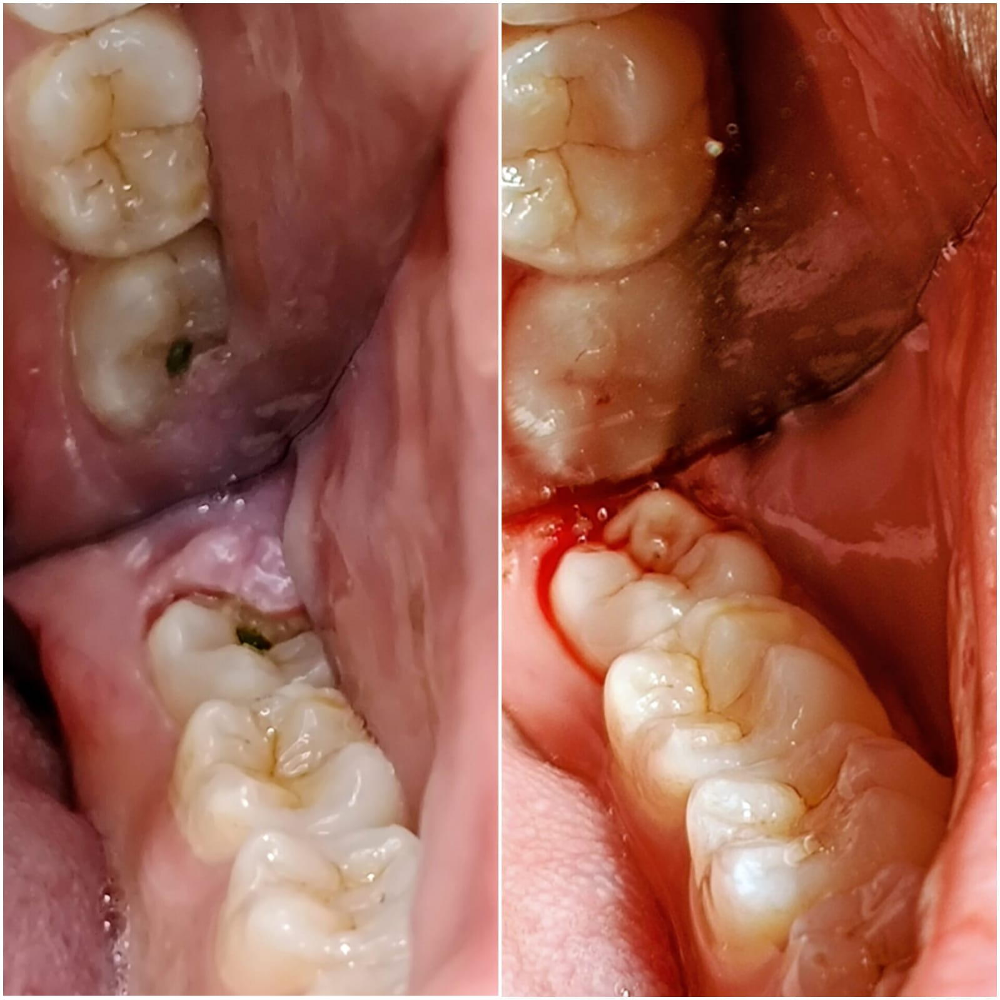

Oral surgery
Wisdom tooth pain while chewing

Before After procedurePresentation (left) and immediately after operculectomy (right), as recorded at the visit.
Tap to enlargeThe patient’s concern
The patient visited Enamel Craft Dental Studio in Baner with pain and discomfort while chewing around a lower wisdom tooth. The pain happened during normal biting and chewing—not only with hot or cold—and they were unsure whether the tooth needed extraction or root canal treatment.
Clinical examination
The wisdom tooth was fully erupted into the mouth. A small flap of gum tissue (operculum) still covered part of the chewing surface. During biting, that flap was repeatedly trapped between the wisdom tooth and the opposing tooth, injuring the gum and causing pain.
Examination showed the discomfort came from the gum tissue, not from decay requiring a root canal or from an unerupted impacted tooth.
Treatment plan
Because the tooth was fully erupted and healthy, with no immediate need for extraction, we chose a conservative approach: operculectomy—removal of the excess gum flap under local anaesthesia—rather than removing the entire tooth.
- Goal: stop the gum from being pinched on every chew and restore comfortable function.
- Procedure: excision of the operculum so the full crown is exposed and easier to keep clean.
- Aftercare: soft diet and gentle cleaning in the area while the site heals (as advised at the visit).
Outcome
Once the flap was removed, the opposing teeth no longer traumatised the gum during chewing. The wisdom tooth remained in place with a clear chewing surface—addressing the patient’s pain without an unnecessary extraction.